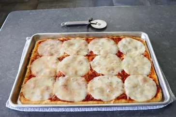

New England Beach Pizza

Description
When I heard New England beach pizza called "America's worst pizza," I knew I had to give it a try. With a thin crust, a very sweet sauce, no toppings but a scant sprinkle of mozzarella and full slices of provolone—well, it does deserve a certain reputation. I admit that it is good in a guilty-pleasure sort of way, and a really fun experiment.
Ingredients
Sauce
- 2 tablespoons of olive oil
- 3 cloves garlic, crushed
- 1/4 cup tomato paste
- 2 cups marinara sauce
- 1/4 cup water
- 1/4 cup white sugar, or to taste
- 1/4 teaspoon dried oregano
- 1/4 teaspoon chilli flakes (optional)
Pizza
- 2 tablespoons olive oil
- 24 ounces pizza dough
- 3 ounces shredded mozzarella cheese
- 12 slices provolone cheese
Steps
- Preheat the oven to 475 degrees F (245 degrees C).
- Heat olive oil in a saucepan over medium heat; sauté garlic until fragrant, about 30 seconds. Stir in tomato paste, and cook, stirring, for another 30 seconds. Add marinara, water, sugar, oregano, and chili flakes. Bring to a simmer, and cook, stirring occasionally, for 10 to 15 minutes. Taste for seasoning and adjust if need be. Turn off heat and reserve.
- Roll and stretch dough into a rectangle about 15x10 inches. Rub a 13x18-inch half sheet pan with olive oil and transfer dough on. Push, pull, and stretch dough to cover pan. If dough pulls back from the edge, let it rest for a few minutes, and then continue shaping.
- Top dough with a light layer of sauce (the recipe will make extra sauce). Top with mozzarella cheese.
- Bake in the preheated oven until the crust is cooked through, and the bottom is golden brown, 15 to 20 minutes.
- As soon as pizza comes out of the oven, top with slices of provolone. Pizza can be served immediately, or placed back in the oven for a few minutes to melt provolone even more.